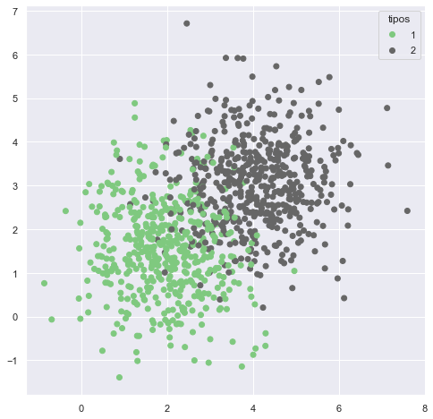

1.5. Jupyter notebooks¶
Jupyter Notebooks son una forma bastante interactiva para programar en Python (funciona también en R!).
1.5.1. Texto¶
Permite insertar texto y formatearlo:
Negrita
Cursiva
Colores
Subrayado
Podemos utilizar \(\LaTeX\) para escribir fórumulas:
\(Y = AL^{\alpha}K^{\beta}\)
Asignar jerarquías para mejor organización del código:
1. Librerías¶
3. Análisis¶
Finalmente, podemos insertar imágenes:

Todo lo anterior se combina con código, tablas y figuras generadas en Python!
1.5.2. Ejemplo de código, datos y figuras.¶
import numpy as np
import pandas as pd
import matplotlib.pyplot as plt
import seaborn as sns
sns.set_theme()
%matplotlib inline
n = 1000
c = np.random.choice([1,2],n)
x = np.random.normal(0,1,n) + c*2
y = np.random.normal(0,1,n) + c*1.5
array = np.array([x,y,c])
array.shape
(3, 1000)
df = pd.DataFrame(array, index=['x','y','c']).T
df.head(10)
| x | y | c | |
|---|---|---|---|
| 0 | 3.387371 | 2.839932 | 2.0 |
| 1 | 5.028037 | 4.608499 | 2.0 |
| 2 | 4.841783 | 3.523167 | 2.0 |
| 3 | 1.629355 | 1.114216 | 1.0 |
| 4 | 3.314520 | 3.395453 | 2.0 |
| 5 | 5.452855 | 1.864435 | 2.0 |
| 6 | 1.738619 | 0.873223 | 1.0 |
| 7 | 2.376349 | 2.211664 | 1.0 |
| 8 | 4.249306 | 2.946072 | 2.0 |
| 9 | 4.190842 | 3.734079 | 2.0 |
fig = plt.figure(figsize=(8,8))
scat = plt.scatter(x,y, c=c, cmap='Accent')
legend1 = plt.legend(*scat.legend_elements(), title="tipos")
plt.show()
